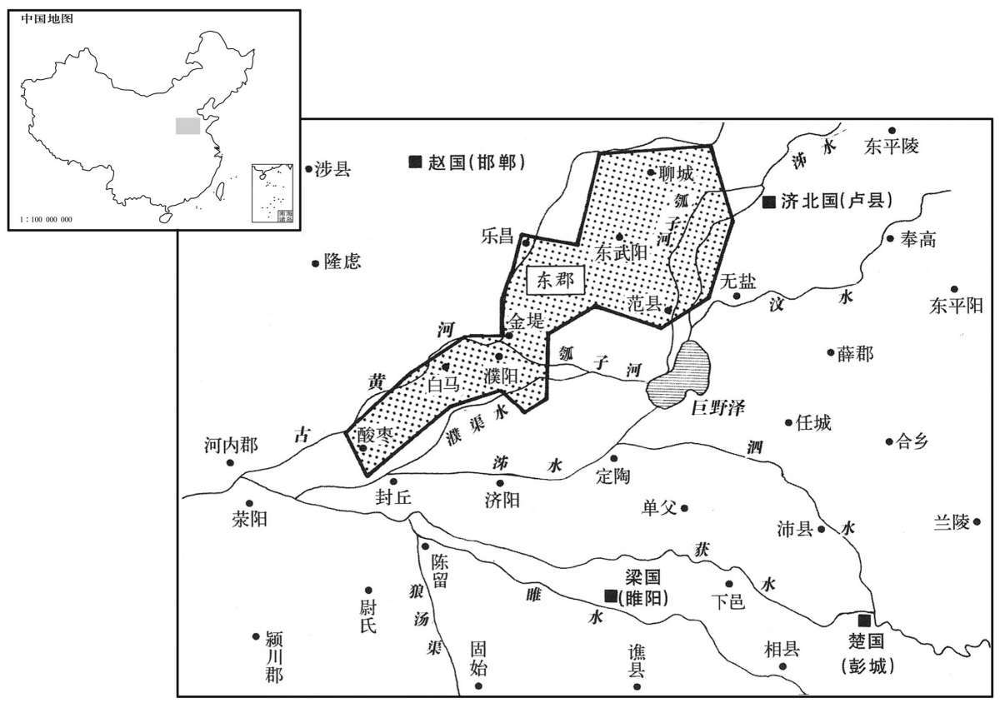

公元前168年资治通鉴：本年记事、原文与白话对照
按原书编年位置阅读；追叙和史论不等于本年发生的事件。白话采用所据译本，缺译不以生成译文补齐。
卷15 · 本年记事
公元前168年 · 汉太宗孝文皇帝前十二年
十二年〔（癸酉、前一六八）〕
本年事件索引（现代整理）
冬，十二月，河决酸枣，东溃金堤、东郡；大兴卒塞之。〔班志，酸枣县属陈留郡。师古曰：金堤在东郡白马界，今滑州。括地志：金堤，一名千里堤，在白马县东五里。余据河堤自汴口以东，缘河积石为堰，通河古口，咸曰金堤。又水经注：濮阳县故城在河南，与卫县分水；城北十里有瓠河口，有金堤。塞，悉则翻。〕
冬季，十二月，黄河在酸枣县决口，向东冲溃了金堤，淹没东郡；朝廷大量征发士卒堵塞决口。

春，三月，除关，无用传。〔张晏曰：传，信也；若今过所也。如淳曰：两行书缯帛，分持其一，出入关，合之乃得过，谓之传也。李奇曰：传，棨也。师古曰：张说是也。古者或用棨，或用缯帛；棨者，刻木为合符也。康曰：传以木为之，长尺五，书符于上为信。传，张恋翻。〕
春季，三月，朝廷宣布废止关隘检查制度，吏民出行不必带证明身份的符传。
鼌错言于上曰：“圣王在上而民不冻饥者，非能耕而食之，织而衣之也，为开其资财之道也。〔食，祥吏翻。衣，于既翻。为，于伪翻。〕故尧有九年之水，汤有七年之旱，而国亡捐瘠者，〔孟康曰：肉腐为瘠。捐，骨不埋者。或曰：捐，谓有饥相弃捐者；或谓贫乞者为捐。苏林曰：瘠，音渍。师古曰：瘠，瘦病也；言无相弃捐而瘦病者耳，不当音渍也；贫乞之释，尤疏僻焉。亡，古无字通。〕以畜积多而备先具也。今海内为一，土地人民之众不减汤、禹，加以无天灾数年之水旱，而畜积未及者，何也？地有遗利，民有余力；生谷之土未尽垦，山泽之利未尽出，游食之民未尽归农也。
晁错对文帝说：“英明的君主在位，百姓不受饥寒的折磨，这并不是君主能亲自耕作供给百姓食物，亲自织布为百姓做衣服，而是君主为百姓开辟了生财之路。所以尧遇到九年的大涝灾，商汤七年的大旱灾，而全国并没有被抛弃的病饿者，其原因就在蓄 积多而预先做了充分的准备。现在海内大一统，土地之广、人口之众，不亚于商汤和夏禹时代，再加上没有持续几年的旱涝天灾，但蓄 积却没有那时多，原因何在？是因为土地还有余力没有利用，百姓还有余力没有发挥；可生长谷物的土地还没有全部开垦，山林川泽的财富还没有全部开发，不从事生产而消耗粮食的游民还没有全部回归农业生产。
夫寒之于衣，不待轻暖；〔师古曰：荀御风霜，不求美丽也。〕饥之于食，不待甘旨；〔师古曰：旨，美也。〕饥寒至身，不顾廉耻。人情，一日不再食则饥，终岁不制衣则寒。夫腹饥不得食，肤寒不得衣，虽慈父不能保其子，君安能以有其民哉！明主知其然也，故务民于农桑，薄赋敛，〔敛，力赡翻。〕广畜积，以实仓廪，备水旱，故民可得而有利也。民者，在上所以牧之；民之趋利，如水走下，四方无择也。〔趋，七喻翻。走，音奏。〕
“严寒之时人们急需衣服，不求轻暖，能御寒就穿；饥饿时急需食品，不求香甜可口，能充饥就吃。饥寒临身，人们顾不得讲究廉耻。人之常情，一天不吃两餐就会挨饿，一年不做衣服就会挨冻。如果腹中饥饿却得不到食物，肌肤寒冷却得不到衣服，即便是慈父也不能保有他的儿子，君主怎么能够控制住他的百姓呢！英明的君主知道这个道理，所以引导百姓从事农桑耕织，少收赋税，多搞蓄积，用来充实府库，防备旱涝灾害，所以才能稳定对百姓的统治。百姓的善恶，就看君主如何去诱导、统治他们；百姓追求财利，就如同水只会向下流而不选择方向一样。
夫珠、玉、金、银，饥不可食，寒不可衣；然而众贵之者，以上用之故也。其为物轻微易藏，〔易，以豉翻；下同。〕在于把握，可以周海内而无饥寒之患。〔师古曰：周，谓周遍而游行。〕此令臣轻背其主〔背，蒲妹翻。〕而民易去其乡，盗贼有所劝，亡逃者得轻资也。粟、米、布、帛，生于地，长于时，聚于力，非可一日成也；〔长，知两翻；下同。〕数石之重，中人弗胜，〔师古曰：中人者，处强弱之中也。胜，音升。〕不为奸邪所利，一日弗得而饥寒至。是故明君贵五谷而贱金玉。
“珠、玉、金、银等物品，饿的时候不能吃，冷的时候不能穿；但是大家都把它们视为珍宝，原因就在于君主使用它们。这些东西轻又小便于收藏，只要拿着握于手掌中的那么一点，就可以周游天下而不受饥寒之苦。这可以使臣子轻易地背叛他的君主，使百姓轻易地离开故乡，刺激了盗贼的贪欲，使逃亡者得到轻便 的资财。粟、米、布、帛等物，产于土地，按时成长，投入很多人力，不是一天就可以生产出来的；重达数石的粟、米、布、帛，价值有限，一个体力中等的人却已无法搬运，它不会成为资贼劫夺的目标，但人们一天得不到它们，就得忍受饥寒。所以英明的君主看重五谷而轻视金玉。
今农夫五口之家，其服役者不下二人，〔师古曰：服，事也；服公事之役也。〕其能耕者不过百畮，百畮之收不过百石。春耕，夏耘，秋获，冬藏，伐薪樵，治官府，给繇役；〔治，直之翻。繇，与傜同；后以义推。〕春不得避风尘，夏不得避暑热，秋不得避阴雨，冬不得避寒冻，四时之间无日休息；又私自送往迎来、吊死问疾、养孤长幼在其中。勤苦如此，尚复被水旱之灾，〔复，扶又翻。被，皮义翻。〕急政暴赋，赋敛不时，朝令而暮改。〔敛，力赡翻。〕有者半贾而卖，〔师古曰：本直千钱，止得五百也。贾，读曰价。〕无者取倍称之息，〔如淳曰：取一偿二为倍称。师古曰：称，举也，今俗所谓举钱者也。余谓如说是。称，尺证翻。〕于是有卖田宅，鬻妻子〔【章：甲十五行本“妻子”作“子孙”；乙十一行本同；退斋校同。】〕以偿责者矣。而商贾，大者积贮倍息，小者坐列贩卖，〔师古曰：行卖曰商，坐贩曰贾。列，市列也，若今市中卖物行也。贾，音古。贮，丁吕翻。〕操其奇赢，日游都市，〔操，千高翻。师古曰：上所急求，则其价倍贵。〕故其男不耕耘，女不蚕织，衣必文采，食必粱肉；〔师古曰：粱，好粟也，即今之粱米。〕无农夫之苦，有仟伯之得。〔师古曰：仟，谓千钱；伯，谓百钱也。白，莫白翻，今俗犹谓百钱为一伯。〕因其富厚，交通王侯，力过吏势，以利相倾；千里游敖，冠盖相望，乘坚、策肥、履丝、曳缟、〔乘坚车，策肥马。师古曰：坚，谓好车也。缟，皓素也；缯之精白者也。〕此商人所以兼并农人，农人所以流亡者也。
“现在家中有五口人的农民家庭，为官府服徭役的不少于两个人，能耕种的土地不过一百亩，百亩土地的收获量不超过一百石。农民春季耕种，夏季锄草，秋季收获，冬季贮藏，砍柴，修缮官府房屋，服徭役；春天不能避风尘，夏天不能避暑热，秋天不能避阴雨，冬天不能避严寒，一年四季没有休息的日子；还有民间的人情往来，吊唁死者慰问病人、赡养父母、哺育子女等负担，也得从一百石的收获物中支付。农民如此勤劳困苦，还要再蒙受旱涝灾害，官府政令严苛而赋税繁重，不按规定时间征收赋税，早上发布的政令晚上又有变化。农民家中有资财的，以半价折卖，家中贫穷的，只好去借利息双倍的高利贷，于是就有人卖土地房宅、卖妻卖子以偿还债务了。而那些行商坐贾，实力大的积贮钱财发放双倍利息的高利贷，实力小的坐在市肆中作买卖，依靠手中囤积的物品，每天游荡在都市之中，得知皇帝急需某种物品，就把价格提高到两倍以上。所以商人男的不去耕田耘草，女的不去养蚕纺织，但穿衣服却非穿华丽的绸缎不可，吃饭非吃好米好肉不可。商人不受农民那样的辛苦，却可以得到很多钱财。商人依仗手中大量的钱财，与王侯显贵结交，势力超过了一般官员，于是以财利进行倾轧；商人到千里之外遨游，车子在路上前后相望，络绎不绝。他们乘坐着坚实的车子，鞭策着肥马，踏着丝制的鞋子，穿着精美的白色绸缎衣服。这就是商人兼并农民、农民破产流亡的原因。
方今之务，莫若使民务农而已矣。欲民务农，在于贵粟；贵粟之道，在于使民以粟为赏罚。今募天下入粟县官，得以拜爵，得以除罪。如此，富人有爵，农民有钱，粟有所渫。〔师古曰：渫，散也，先列翻。〕夫能入粟以受爵，皆有余者也；取于有余以供上用，则贫民之赋可损，〔师古曰：损，减也。〕所谓损有余，补不足，令出而民利者也。今令民有车骑马一匹者，复卒三人；〔如淳曰：复三卒之算钱也；或曰：除三夫不作甲卒也。师古曰：当为卒者，免其三人；不为卒者，复其钱。复，方目翻。〕车骑者，天下武备也，故为复卒。〔为，于伪翻。〕神农之教曰：『有石城十仞，〔应劭曰：仞，六尺五寸也。师古曰：此说非也；八尺曰仞，取人伸臂之一寻也。〕汤池百步，〔师古曰：池，城边池也、以沸汤为池，不可辄近，言严固之甚。〕带甲百万，而无粟，弗能守也。』以是观之，粟者，王者大用，政之本务。今民入粟受爵至五大夫以上，〔师古曰：五大夫，第九爵。〕乃复一人耳，此其与骑马之功相去远矣。爵者，上之所擅，〔师古曰：擅，专也。〕出于口而无穷；粟者，民之所种，生于地而不乏。夫得高爵与免罪，人之所甚欲也；使天下人入粟于边以受爵、免罪，不过三岁，塞下之粟必多矣。”
“现在的当务之急，没有比使百姓从事农耕更重要的了。要想使百姓务农，关键在于使全社会把粮食看成为珍宝；使全社会把粮食看做珍宝的方法，在于朝廷 把粮食作为奖惩手段统治百姓。可以召募天下百姓向官府缴纳粮食，用以购买爵位免除罪名。这样，富人可以拥有爵位，农民可以得到钱，粮食就不会被屯积。那些能够缴纳粮食换取爵位的人，都是粮食有余的，收取余粮供给国家使用，就可以减少对贫困百姓收取的赋税，这就是所说的‘损有余，补不足’，政令一公布就可以给百姓带来利益。现行的律令规定：有一匹战马的人家，可免除三人的兵役；战马，是天下的重要军事装备，所以给予免除兵役的优待。神农的教令说：‘有高达十仞的石砌城墙，有宽达一百步的滚沸的护城河，有一百万全副武装的士兵，但没有粮食，那无法守住城池。’由此看来，粮食是君主的重要资本，是国家政治的根本所在。现在百姓缴纳粮食要得到五大夫以上的爵位，才能免除一人的兵役，这与对有战马的人的优待相比较，差得太远了。封爵的权力，是君主所专有的，由口而出可以无穷无尽；粮食，是百姓所种的，生长于土地而不会缺乏。得到高等爵位和免除罪名，是天下百姓最迫切的欲望；让天下人输送粮食到边境地区，以换取爵位、免除罪名，不用三年时间，边塞的粮食储备就必定会很多了。”
帝从之，令民入粟于边，拜爵各以多少级数为差。〔时令入粟六百石爵上造，稍增至四千石为五大夫，万二千石为大庶长。〕
文帝采纳晁错的意见，下令规定：百姓输送粮食到边塞，依据输送粮食的多少，分别授给高低不同的爵位。
错复奏言：“陛下幸使天下入粟塞下以拜爵，甚大惠也。〔复，扶又翻；下同。〕窃恐塞卒之食不足用，大渫天下粟。边食足以支五岁，可令入粟郡县矣；〔师古曰：入诸郡县以备凶灾也。〕郡县足支一岁以上，可时赦，勿收农民租。如此，德泽加于万民，民愈勤农，大富乐矣。”〔乐，音洛。〕
晁错又上奏说：“陛下降恩，让天下人输送粮食去边塞，以授给爵位，这是对百姓的很大恩德。我私下担忧边塞驻军的粮食不够吃，所以让天下的屯粮崐大批流入边塞。如果边塞积粮足够使用五年，就可以让百姓向内地各郡县输送粮食了；如果郡县积粮足够使用一年以上，可以随时下诏书，不收农民的土地税。这样，陛下的恩德雨露普降于天下万民，百姓就会更积极地投身农业生产，天下就会十分富庶安乐了。”
上复从其言，诏曰：“道民之路，在于务本。〔道，读曰导。〕朕亲率天下农，十年于今，而野不加辟，〔师古曰：辟，读曰辟，开也。〕岁一不登，民有饥色；〔师古曰：登，成也；言五谷一岁不成则众庶饥馁，是无蓄积故也。〕是从事焉尚寡〔师古曰：从事，谓从农事也。〕而吏未加务。吾诏书数下，岁劝民种树而功未兴，是吏奉吾诏不勤而劝民不明也。且吾农民甚苦而吏莫之省，将何以劝焉！〔数，所角翻。省，悉井翻。〕其赐农民今年租税之半。”
文帝采纳了他的建议，下诏说：“引导百姓的正确道路，在于让他们从事农业生产。朕亲自率领天下人务农耕种，至今已有十年了，但荒地的开垦没有增加，一年收成不好，百姓就有饥饿之色；这是从事农耕的人还不多，而官吏没有切实发展农业。朕屡次颁下诏书，每年都鼓励百姓种植，至今未见成效，这就证明官吏没有认真地执行诏令去勉励百姓。况且朕的农民生活很苦而官吏并不去照顾他们，又怎么能勉励他们从事农业呢！今年把原定征收的土地税的的一半赐给农民。”